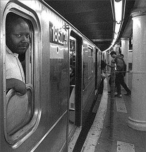

All workers engaged in municipal, short distance transportation and telecommunication services.
Submitted on Sat, 08/20/2005 - 11:00pm
Disclaimer - The following article is reposted here because it is an issue with some relevance to the IWW. The views of the author and the publisher do not necessarily agree with those of the IWW and vice versa.
 by William Johnson - Labor Notes, August 2005
Automation is transforming working conditions for the thousands of union members who keep the New York subways running. On June 19, the system’s “L” line between Brooklyn and Manhattan began running trains without conductors, leaving train operators as the only crew on board.
Currently, One-Person Train Operation (OPTO) is functioning on the L only during weekends and after midnight, but train operator Tim Schermerhorn believes that once New York’s Metropolitan Transportation Authority (MTA) has gotten the kinks out, “they won’t use conductors at all.”
Aside from costing workers nearly 3,000 jobs, Schermerhorn says, the elimination of conductors will make shop floor organizing more difficult. “Fight-back has to be organized on the ground,” he explains. “If there’s fewer workers, there’ll be less contact [between workers] on the ground.”
Submitted on Mon, 08/08/2005 - 12:15am
Beyond Chron (reposted)Monday, Aug. 01, 2005 at 6:33 AM
Marc Norton 01.AUG.05 (The following opinion piece was submitted to the SF Examiner in response to an article on Muni. The Examiner did not print my piece. -MN)
The recent [July 25] Examiner article on Supervisor Tom Ammiano's proposed Muni charter amendment cries out for some historical background. Andrew Sullivan's claim that "Prop E is working" when Muni riders are facing yet another fare increase on September 1, along with fewer buses on nearly every line, is preposterous. It's time to fight back, not to accept the status quo.
The Prop E story actually begins in 1994, when a large and broad-based coalition, led by then-supervisor Sue Bierman, shook up the downtown kingpins by putting Prop O on the ballot. Prop O would have begun the process of setting up a downtown transit assessment district, and would have required downtown commercial property owners and landlords to pay for the huge subsidy they get from Muni delivering thousands of workers and shoppers to their doors every day of the week.
Try imagining what those downtown office buildings would be worth without Muni. The whole structure of downtown is based on Muni shoveling people through their doors. The 38-Geary alone is one of the largest transportation lines in the world. Take away Muni, and those skyscrapers are just big, empty monuments of concrete and glass.
Submitted on Mon, 07/18/2005 - 9:52pm
By A.C. Thompson - San Francisco Bay Gaurdian, July 13 - July 19, 2005 Disclaimer - The following article is reposted here out of solidarity for the rank & file workers described herein. Their views, the views of the author, and the views of the publisher do not necessarily agree with those of the IWW and vice versa.
As the sun sank July 6, Victor Grayson stood in the courtyard of Martin De Porres Hospitality House, a soup kitchen on Potrero Avenue founded by the dissident Catholic Dorothy Day. Grayson was there to address a loose-knit alliance of young, punk activists who think San Francisco Muni riders should refuse to pay their buck and a quarter if the mass transit system starts slashing bus routes, jacking up fares, and canning employees. The group is calling for a "social strike" (see www.socialstrike.net) and also encouraging drivers not to collect fares if Muni, which is hurting from a major cash crunch, goes forward with austerity measures.
Predictably, Grayson – a sharp cat who's been a Muni driver for 10 years, piloting buses on a number of lines through the Richmond District, the Marina, Laurel Heights, Cow Hollow, and other areas – is not Muni's favorite son right now.
Submitted on Mon, 06/27/2005 - 8:59am
Fellow workers,
Below is the text of a short paper that I wrote on IHS issues for bicycle messengers. With the demise of the AFL's health and safety department, it resolves on us to once again pick up where they are falling behind. With that idea in mind, I present the first in what I hope to make a series of articles about Health & Safety in active IWW campaigns. It is a short paper on Industrial Health and Safety issues for one of the most dangerous jobs being performed every day in our cities, the bicycle messenger. I realize on rereading it that I neglected to write about shoulder injuries from heavy bags, which would of course be an issue under the ergonomics section and is probably quite similar to the high injury rate for mail carriers that use shoulder bags.
I would like to write more articles like this, so if you have a particularly hazardous job or an interesting environmental, health, or safety issue, contact me and I'll see what I can do. Especially if you think that it will be useful in your organizing.
Submitted on Sat, 06/25/2005 - 12:56am
MUNI operators are threatening a wildcat strike on June 30th, claiming union leadership has not done enough to oppose layoffs and service cuts as its membership asked. Drivers have explained that this strike will also be in solidarity with riders who will be hurt by service cuts.
Muni drivers threaten walkout at month's end.
By Marisa Lagos
Staff Writer
SF Examiner
Published: Thursday, June 16, 2005 10:57 PM PDT
Some rank and file members of Muni's drivers union are threatening to walk off the job June 30, saying union leadership has not held strong opposing layoffs and service cuts as its membership asked.
Two drivers, Victor Grayson and Bari McGruder allege that Transport Worker's Union Local 250-A, which represents about 2,000 Muni drivers, did not notify the Muni management of a resolution the union passed at an April meeting. The resolution, which Grayson provided to The Examiner, stated that union members would refuse to sign up for any new schedules that reflect service cuts and demanded that the agency retain its existing schedule.
"With today's schedules, Muni can't lay off any drivers," the resolution read, in part.
The drivers who spoke to The Examiner said they have talked to hundreds of operators and estimated that up to 75 percent of the workforce would participate in a wildcat strike June 30, the same day BART's labor agreement with its unions also expires.
"Union leadership and Muni management have been in bed for years … it's time to put the cards on the table and say it's time to stop," Grayson said.
William Sisk, president of Local-250A, said he had not heard of the strike and that the drivers do not have the authority to call one. He called Grayson and McGruder a "small group of insurgents" and said they account for less than 1 percent of the union's members.
"If they do that, [Muni] can fire them," he said, adding that he will tell members not to participate. "The only thing we can fight schedules on is health and safety. We cannot fight a schedule just because we don't like it — management has a right to change the schedule."
McGruder said drivers have made sacrifices already in recent years, putting $1.5 million back into Muni's budget this year by giving up three days without pay. Both she and Grayson said they feared retribution for speaking publicly about the possible walkout.
To close its $44 million budget shortfall, Muni plans to raise cash fares by 25 cents, increase parking fees and fines and cut service on most lines. At least 150 layoff notices were sent out to drivers in anticipation of cuts this fall.
Since the budget was first proposed, transit advocates and the union vocally objected to the fare hikes and service cuts, arguing they will hurt The City's most vulnerable residents.
Grayson and McGruder contended that the strike was in solidarity with riders who will be hurt by the cuts.
"The wildcat action is not being done for selfish interests, it is in conjunction with workers and all working people who ride the buses," Grayson said.
But Richard Marquez, who has helped organize opposition to Muni's budget through the Coalition for Transit Justice, disputed that notion. He said a symbolic wildcat strike would not have significant weight.
When contacted by The Examiner, Muni spokeswoman Maggie Lynch said the agency had not heard of the possible walkout and referred questions back to union leadership.
A temporary walkout at Muni's cable car division in March over a driver's dismissal led to the transit operators who participated having to give back pay for the day.
---
(This part not in the Examiner)
To find out how you can support this action and also to organize with riders and drivers for a fare strike, calling for NO fare hike, NO service cuts, and NO layoffs visit http://www.socialstrike.org and come to our TOWN HALL MEETING- - Sunday, June 26th 7pm at CELLspace (2050 Bryant @18th)